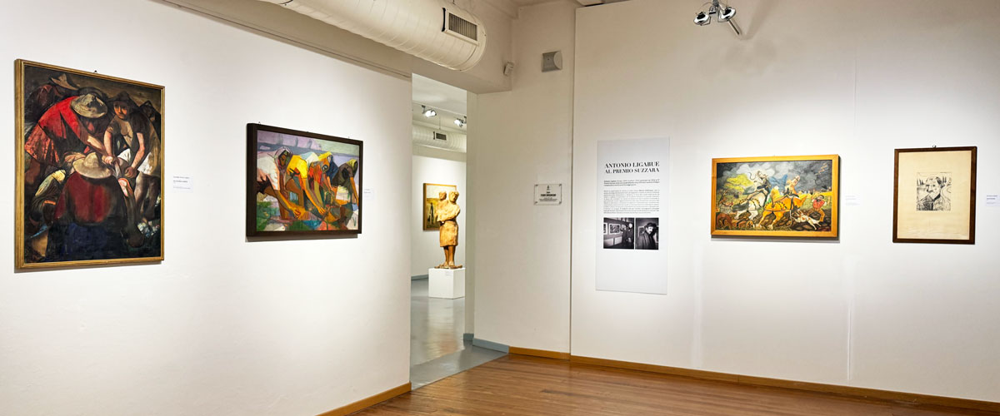

Dal 1948, una collezione unica di arte italiana contemporanea che racconta l'evoluzione del linguaggio artistico dal neorealismo ad oggi
Nel 1975 nasce la Galleria Civica d'Arte Moderna e Contemporanea (dal 1976 si interrompe il Premio, giunto alla sua ventottesima edizione), che raccoglie le opere acquisite nel corso delle varie edizioni del Premio, dal 1948 in avanti (prima conservate negli uffici comunali, nelle scuole e addirittura nelle case dei privati) e intraprende un percorso in parte estraneo alla tradizione del realismo: si presentano grandi artisti contemporanei come Mauro Staccioli, Nicola Carrino, Giosetta Fioroni, Concetto Pozzati, Gianfranco Pardi, Gianni Colombo ecc.
Nel 1989 riparte il Premio Suzzara, aperto alle nuove tendenze dell'arte contemporanea; nel 2002 la Galleria Civica d'Arte Moderna e Contemporanea diventa Museo Galleria del Premio Suzzara, che offre al pubblico la collezione permanente e, dalla terza domenica di settembre alla fine di ogni anno, la mostra collettiva del premio in corso.

La collezione del museo offre al pubblico un patrimonio di oltre millecinquecento opere acquisite nel corso di una storia iniziata nell'immediato dopoguerra, testimoniando l'evoluzione dell'arte italiana contemporanea dal neorealismo ad oggi. In più, dalla terza domenica di settembre alla fine dell'anno sono visibili le opere selezionate per il Premio in corso.
Tra gli autori presenti in collezione ricordiamo: Renato Guttuso, Armando Pizzinato, Giuseppe Zigaina, Renato Birolli, Aligi Sassu, Domenico Cantatore, Giulio Turcato, Franco Francese, Bepi Romagnoni, Titina Maselli, e successivamente Mauro Staccioli, Nicola Carrino, Giosetta Fioroni, Concetto Pozzati, Gianfranco Pardi, Gianni Colombo.
La collezione riflette i termini della questione realista nell'Italia tra gli anni Quaranta e Cinquanta: all'idea di "un'arte comprensibile e umana" si collegava il vecchio concetto di realismo come arte democratica, elaborato da Gustave Courbet un secolo prima.
Scopri gli artisti e le opere che hanno fatto la storia del Premio Suzzara
Vedi gli Artisti →Il museo ha sede a Suzzara, in Via Don Bosco 2/a (fuori dalla ZTL). Gli spazi espositivi si articolano su più sale e tre piani, e ospitano sia la collezione permanente che le mostre temporanee, oltre al premio in corso (dalla terza domenica di settembre a fine anno).
Il museo non è solo uno spazio espositivo, ma un centro culturale attivo che organizza mostre, convegni, pubblicazioni e attività didattiche rivolte a scuole e famiglie, mantenendo vivo il dialogo tra arte, lavoro e società che ha caratterizzato il Premio fin dalle origini.